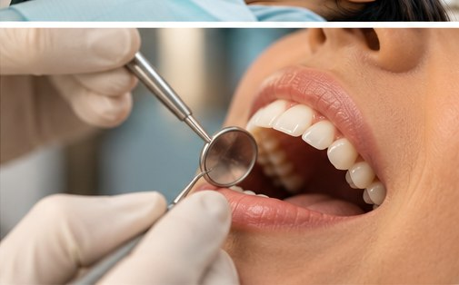
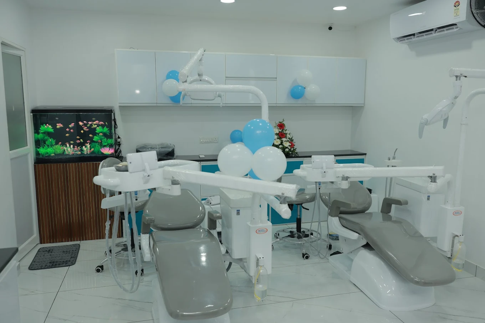
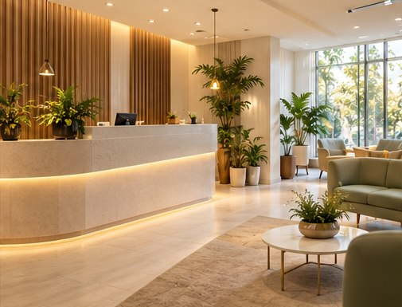
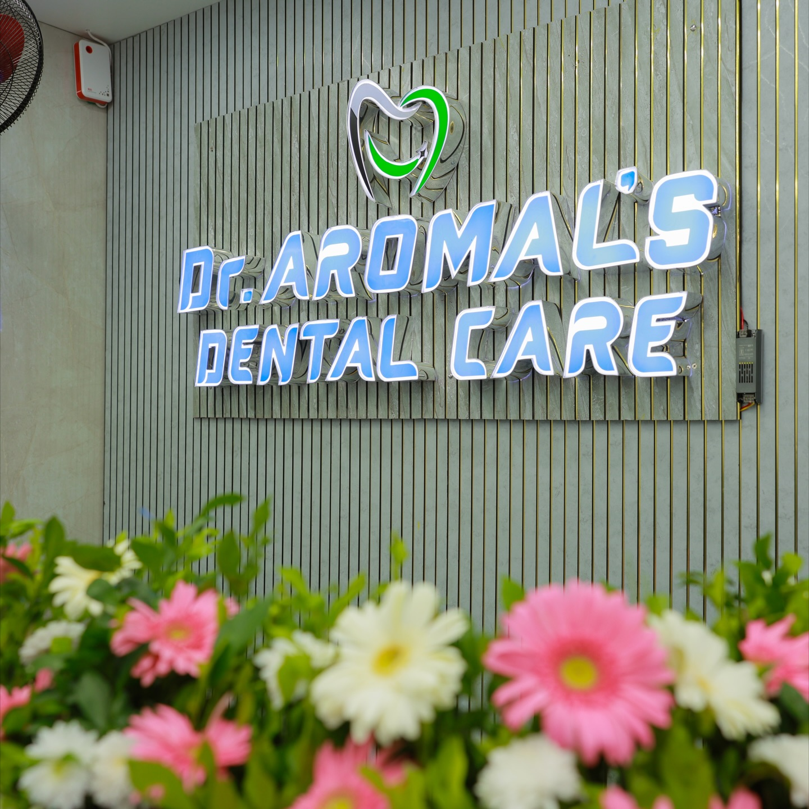
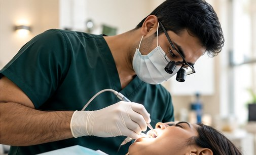
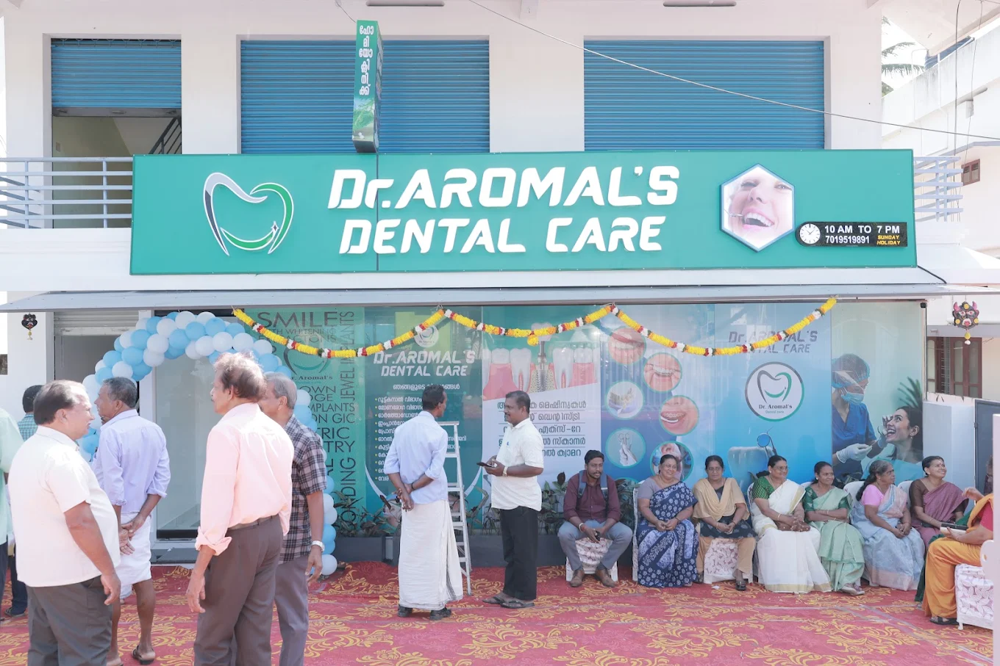
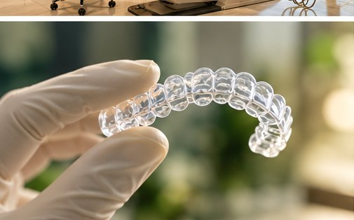
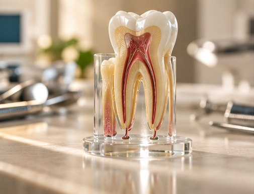
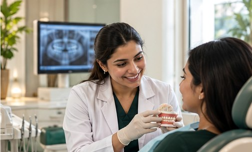

General Dentistry
Preventive care, examinations and personalised oral health guidance.
Enquire about this ↗





Meet Dr. Aromal and discover a clinic built around attentive, personal dental care. We explain your options clearly and help you decide on the next step for your oral health.
Meet Dr. Aromal & Our Team ↗Explore available services and find the right next step for your needs.

Preventive care, examinations and personalised oral health guidance.
Enquire about this ↗

Information and consultation for teeth affected by internal damage.
Enquire about this ↗Discover the details that make every visit feel more personal.
A clean, welcoming clinic designed around your visit.
Time to discuss concerns and understand your options.
Helpful guidance from your first enquiry onwards.

Understand the next steps before making decisions.
Choose the clinic that best suits your journey.
A quiet glimpse into the care and attention behind every visit.
Explore the real clinic spaces, meet your dentist and choose the location that suits you. Our team can help you understand the next step before treatment begins.
Ratings and review counts are transcribed from the supplied listing screenshot and may change.Our aim is to make every step clear, considered and centred around you.
Time to listen and explain your options.
Recommendations tailored to individual needs.
Choose the clinic that is most convenient.
Understand the next steps before treatment.
Explore each clinic for its team, treatments, directions and appointment options.
Visit our Thiruvananthapuram clinic opposite LMS Church.
Explore this clinic ↗Get to know the clinicians working across both locations.
Meet Our Team ↗Call 070195 19891 or choose your preferred clinic.